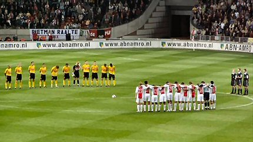
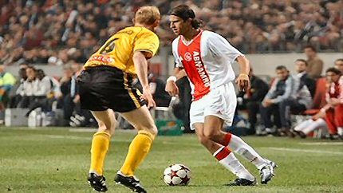
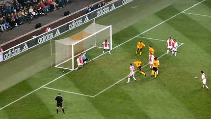
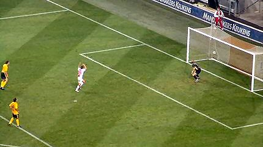
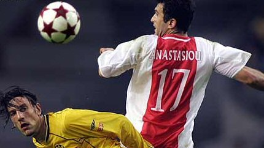

|
Ajax - Roda JC (1-0) 25 september 2004 |
Ajax -
Roda JC (1-0) 25 september 2004

Een minuut stilte vanwege het overlijden van zanger André Hazes.

Sven Vandenbroek had vertrouwen gewonnen na zijn goede spel
tegen Excelsior doch Boukhari was hem een maatje te groot.
Na 25 min. mocht Fussbalgot Sven plaatsmaken voor Ivan Vicelich.

De eerste helft was voor Ajax, de tweede voor Roda. Ajax zakte
weg
en Roda durfde meer. Hier zien we een van de vele gemiste kansen
van Roda JC.

In de 88e min. slaat het noodlot toe!

Anastasiou scoort de enige treffer. Een frustrerende en
onverdiende
nederlaag voor Roda JC.
Foto's met dank aan SV Roda, VI en 401